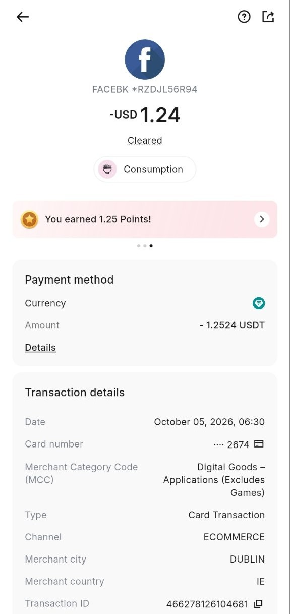

يكشف تحليل 47,517 رسالة نصية لمجموعات الواتساب (7 عمادات + المجموعة العامة) خلال
الفترة من 8 يناير وحتى 9 ديسمبر 2026 عن حجم تفاعل بشري كبير، حيث تم رصد
5,384 استفساراً حقيقياً، نجح المرشدون/السفراء/المتطوعون في الرد على
2,882 منها ميدانياً بنسبة استجابة إجمالية بلغت 53.5%.
من جهة البوت، تشير بيانات WhatsApp Business API إلى إرسال 32,255 رسالة خارجة خلال
الفترة من 12 يوليو إلى 9 أكتوبر 2026، مع 32,231 تم تسليمها فعلياً
(معدل تسليم 99.9%)، واستقبال 18,723 رسالة من الطلبة في المقابل.
تُبرز هذه الأرقام نجاح النموذج الهجين؛ فالبوت يغطي الاحتياجات الفورية والآلية في
أوقات الذروة، في حين يتولى المرشدون/السفراء/المتطوعون التعامل مع الأسئلة المركبة (التجسير، الرسوم،
الخطط الدراسية، مواصفات الأجهزة)، ويبقى ملف عمادة التمريض وعلوم الصحة الأعلى في حجم
التفاعل واستجابة المرشدين/السفراء/المتطوعين.
لم يأتِ الاستثمار في البوت الإلكتروني عبر واتسآب ليحل محلّ الاستقطاب الوجاهي، بل جاء ليعمل إلى جانبه كقناة موازية ضرورية، تُكمل ما لا تستطيع القنوات الوجاهية وحدها تغطيته في ظل الظروف الراهنة في قطاع غزة. فالاستقطاب الوجاهي ما زال قائماً ومستمراً، ومهماً في بناء الثقة المباشرة بين الطالب والكلية، وله أثره الواضح في التعريف بالبرامج والتخصصات. إلا أنّ هذا النمط من الاستقطاب بطبيعته محدود بحدود المكان والزمان والعدد: فهو يتطلب تنقلاً بين محافظات القطاع، وتواجداً بشرياً في نقاط محددة، ووقتاً معيناً من اليوم، وموارد لوجستية لنقل الفرق والمطبوعات. وفي ظل تكرار النزوح، وتردّي شبكة الطرق، وتقطّع أوصال التواصل بين المحافظات، يصبح من الصعب جداً — لا المستحيل — الوصول إلى كل طالب جديد في كل مكان وبكل الأوقات.
ومن هنا تبرز الحاجة الملحّة إلى قناة اتصال إلكترونية مرنة ومستمرة وواسعة الانتشار، لا تعتمد على الحركة ولا على المكان ولا على الوقت، وتصل إلى الطالب في مكان نزوحه، وفي أي ساعة من اليوم، وبأقل تكلفة ممكنة. وقد شكّل بوت الاستقطاب والطلبة الجدد عبر واتسآب الجواب الأمثل على هذه الحاجة؛ لأنه يعتمد على تطبيق واتسآب الذي يُعد القناة الأكثر استخداماً وشعبيةً في غزة، كما أنه يعمل على مدار الساعة دون توقف ودون الحاجة إلى تواجد بشري دائم في مكان محدد. وبذلك يُصبح البوت ركيزة داعمة ومكمّلة للاستقطاب الوجاهي، وليس بديلاً عنه.
وقد ظهر تأثير هذا العامل بشكل واضح ونجاحه بمؤشرات ملموسة. فالبوت استوعب خلال الأشهر الأولى من انطلاقه أرقاماً قياسية تجاوزت 32,255 رسالة خارجة بمعدل تسليم 99.9%، ووصل إلى 2,467 مشاركاً في المجموعات الإرشادية المرتبطة به، مما يُصعّب تحقيقه عبر القنوات الوجاهية وحدها في مثل هذه الظروف. واستمر فريق الاستقطاب في تأدية دوره التوجيهي دون انقطاع، وبنفس التوقيت الذي تعطّلت فيه أو تراجعت فيه كثير من القنوات التقليدية في القطاع. ويُعد هذا دليلاً عملياً على أن الاتصال الإلكتروني عبر واتسآب أصبح رافعة أساسية لاستمرارية عمل الاستقطاب، وأنّ الاستثمار فيه ليس مجرد خيار تقني بل قرار تشغيلي استراتيجي يكمّل الجهد الوجاهي ويعزّز أثره.
بالمقابل، كان الطلبة الجدد في أمَسّ الحاجة إلى قناة سريعة ومباشرة يجدون فيها إجاباتهم حول التخصصات المتاحة، وشروط القبول، والرسوم الدراسية، والمنح، ومواعيد التسجيل، والفروق بين البرامج، دون الحاجة إلى التنقل أو الانتظار لساعات أمام مكتب أو في انتظار لقاء بشري مباشر في أوقات يُعاني فيها الإنسان من ظروف قاسية. وقد ظهر تفاعلهم مع البوت على شكل استخدام يومي متكرر، وانتقالهم السريع إلى المجموعات الإرشادية حين تتطلب استفساراتهم تفصيلاً بشرياً، واستخدامهم للبوت كنقطة دخول أولى للمعلومة. وتؤكد أرقام هذا التقرير أنّ هذا التفاعل ليس ظاهرة موسمية عابرة، بل أصبح سلوكاً ثابتاً وسمةً من سمات المرحلة، ينبغي للفريق أن يبني عليه، ويعززه بالتطوير والتوسّع، ليبقى صوت الكلية مسموعاً لدى كل طالب جديد أينما كان في قطاع غزة.
الفترة: 12 يوليو – 9 أكتوبر 2026 (83 يوماً من النشاط)
| المؤشر | القيمة |
|---|---|
| إجمالي الرسائل الخارجة | 32,255 رسالة |
| إجمالي الرسائل المسلَّمة | 32,231 رسالة (99.9%) |
| إجمالي الرسائل المستلمة | 18,723 رسالة |
| المتوسط اليومي للإرسال | ~389 رسالة/يومياً |
| أعلى 3 أيام إرسالاً | 1/8 (1,615) • 27/7 (1,407) • 2/8 (1,256) |
| الرسائل الجماعية (Groups) | 0 (لا يُستخدم هذا الخيار حالياً) |
| الترتيب | العمادة | المشاركون | الاستفسارات | التقييم |
|---|---|---|---|---|
| 1 | عمادة التمريض وعلوم الصحة | 777 | 1,891 | ⭐⭐⭐⭐⭐ |
| 2 | المجموعة العامة | 601 | 1,398 | ⭐⭐⭐⭐ |
| 3 | عمادة الهندسة والنظم الذكية | 310 | 686 | ⭐⭐⭐⭐ |
| 4 | عمادة تكنولوجيا المعلومات | 268 | 483 | ⭐⭐⭐ |
| 5 | عمادة إدارة المال والأعمال | 196 | 408 | ⭐⭐⭐ |
| 6 | عمادة الدبلوم المهني والتعليم المستمر | 141 | 234 | ⭐⭐⭐ |
| 7 | عمادة العلوم الإنسانية والإعلام | 86 | 152 | ⭐⭐⭐ |
| 8 | عمادة التربية | 88 | 132 | ⭐⭐ |
| المجموع الكلي | 5,384 | 53.5% | ||
أبرز 5 من المرشدين/السفراء/المتطوعين:
| # | الاسم / الرقم | الردود |
|---|---|---|
| 1 | +972 59-770-0308 | 306 |
| 2 | +970 598 795 595 | 197 |
| 3 | +970 598 350 183 | 136 |
| 4 | +970 592 117 798 | 131 |
| 5 | +972 56-964-4052 | 79 |
أبرز 5 مواضيع مطروحة:
📝 استُبعدت 368 رسالة نظامية و299 وسائط. «راسلني خاص» ذُكر 37 مرة.
أبرز 5 من المرشدين/السفراء/المتطوعين:
| # | الاسم / الرقم | الردود |
|---|---|---|
| 1 | +972 59-770-0308 | 189 |
| 2 | +970 598 795 595 | 158 |
| 3 | Reem Abu Taha | 78 |
| 4 | +972 59-768-1227 | 38 |
| 5 | +972 59-966-8913 | 27 |
أبرز 5 مواضيع مطروحة:
📝 استُبعدت 290 رسالة نظامية و149 وسائط. «راسلني خاص» ذُكر 24 مرة.
أبرز 5 من المرشدين/السفراء/المتطوعين:
| # | الاسم / الرقم | الردود |
|---|---|---|
| 1 | Ibrahim Almeshal | 75 |
| 2 | +972 59-234-3799 | 53 |
| 3 | +970 567 663 029 | 50 |
| 4 | +970 598 795 595 | 28 |
| 5 | +972 56-784-9381 | 26 |
أبرز 5 مواضيع مطروحة:
📝 استُبعدت 119 رسالة نظامية و58 وسائط. «راسلني خاص» ذُكر 15 مرة.
أبرز 5 من المرشدين/السفراء/المتطوعين:
| # | الاسم / الرقم | الردود |
|---|---|---|
| 1 | +970 598 795 595 | 42 |
| 2 | +972 59-919-4958 | 28 |
| 3 | +972 59-210-6485 | 21 |
| 4 | +972 59-770-0308 | 18 |
| 5 | +972 59-739-6196 | 17 |
أبرز 5 مواضيع مطروحة:
📝 استُبعدت 81 رسالة نظامية و61 وسائط. «راسلني خاص» ذُكر 14 مرة.
أبرز 5 من المرشدين/السفراء/المتطوعين:
| # | الاسم / الرقم | الردود |
|---|---|---|
| 1 | Reem Abu Taha | 38 |
| 2 | +970 598 795 595 | 32 |
| 3 | +972 59-770-0308 | 22 |
| 4 | +972 59-768-1227 | 16 |
| 5 | Raghad Miteer | 16 |
أبرز 5 مواضيع مطروحة:
📝 استُبعدت 75 رسالة نظامية و34 وسائط. «راسلني خاص» ذُكر 14 مرة.
أبرز من المرشدين/السفراء/المتطوعين:
| # | الاسم / الرقم | الردود |
|---|---|---|
| 1 | +970 598 795 595 | 54 |
| 2 | +972 59-770-0308 | 35 |
أبرز 5 مواضيع مطروحة:
📝 استُبعدت 44 رسالة نظامية و14 وسائط. «راسلني خاص» ذُكر 4 مرة.
أبرز 5 من المرشدين/السفراء/المتطوعين:
| # | الاسم / الرقم | الردود |
|---|---|---|
| 1 | +972 59-987-1270 | 17 |
| 2 | +972 59-223-9940 | 17 |
| 3 | +970 598 795 595 | 13 |
| 4 | +972 59-770-0308 | 11 |
| 5 | +972 56-754-1771 | 11 |
أبرز 5 مواضيع مطروحة:
📝 استُبعدت 33 رسالة نظامية و19 وسائط. «راسلني خاص» ذُكر 3 مرة.
أبرز 5 من المرشدين/السفراء/المتطوعين:
| # | الاسم / الرقم | الردود |
|---|---|---|
| 1 | +970 598 795 595 | 12 |
| 2 | شريهان مرتجى | 11 |
| 3 | أ. رانيا اسامه حامد طه | 9 |
| 4 | +972 56-791-1866 | 6 |
| 5 | +972 59-770-0308 | 4 |
أبرز 5 مواضيع مطروحة:
📝 استُبعدت 27 رسالة نظامية و4 وسائط. «راسلني خاص» ذُكر 7 مرة.
| العمادة | الاستفسارات | الردود | بدون رد | نسبة الرد | متوسط زمن الرد | التقييم |
|---|---|---|---|---|---|---|
| التمريض وعلوم الصحة | 1,891 | 1,253 | 638 | 66.3% | 1س 16د | ⭐⭐⭐⭐⭐ |
| المجموعة العامة | 1,398 | 766 | 632 | 54.8% | 1س 24د | ⭐⭐⭐⭐ |
| الهندسة والنظم الذكية | 686 | 322 | 364 | 46.9% | 1س 14د | ⭐⭐⭐⭐ |
| تكنولوجيا المعلومات | 483 | 198 | 285 | 41.0% | 1س 15د | ⭐⭐⭐ |
| إدارة المال والأعمال | 408 | 146 | 262 | 35.8% | 1س 31د | ⭐⭐⭐ |
| الدبلوم المهني | 234 | 85 | 149 | 36.3% | 1س 16د | ⭐⭐⭐ |
| العلوم الإنسانية والإعلام | 152 | 68 | 84 | 44.7% | 58 د | ⭐⭐⭐ |
| التربية | 132 | 44 | 88 | 33.3% | 28 د | ⭐⭐ |
| المجموع | 5,384 | 2,882 | 2,502 | 53.5% | — | — |
* التقييم مبني على نسبة الرد وسرعة الاستجابة وحجم النشاط.
| # | الموضوع | مجموع التكرار | أبرز العمادات |
|---|---|---|---|
| 1 | أخرى / غير مصنّف | 2,244 | التمريض، المجموعة العامة، الهندسة |
| 2 | التخصصات والأقسام | 1,001 | التمريض، المجموعة العامة، الهندسة |
| 3 | التسجيل والقبول | 583 | التمريض، الهندسة، المجموعة العامة |
| 4 | الرسوم والدفع | 444 | التمريض، الهندسة، إدارة الأعمال |
| 5 | الجداول والمواعيد | 215 | التمريض، الهندسة، التربية |
| 6 | المواد والمساقات | 61 | إدارة الأعمال، تكنولوجيا المعلومات، الإنسانية |
* تم احتساب الأرقام من قوائم "أبرز 5 مواضيع" لكل عمادة، ولذلك قد يكون هناك مواضيع أخرى بسيطة غير مشمولة.
📌 الأرقام المعروضة في القسم السابق تمثل الردود العلنية فقط (التي تظهر داخل المجموعات).
الردود عبر الخاص: تشكل عادة 30–50% من إجمالي الردود — تتم عندما يُطلب من الطالب التواصل خاصاً لحل مشكلته، ولا تظهر في سجلات المجموعة.
مؤشر جانبي: عبارة «راسلني خاص» ذُكرت 135 مرة موزعة على كل العمادات، مما يؤكد أن جزءاً معتبراً من التفاعل الفعلي يجري خارج المجموعات.
pmp_metrics.csv.
| التاريخ | النوع | الحجم (Volume) | الرسوم التقريبية |
|---|---|---|---|
| 5 سبتمبر 2026 | Utility | 1 | $0.01 |
| 4 أكتوبر 2026 | Service / Paid | 203 | $1.23 |
| 5 أكتوبر 2026 | Service / Paid | 421 | $2.48 |
| 6 أكتوبر 2026 | Service / Paid | 302 | $1.88 |
| 7 أكتوبر 2026 | Service / Paid | 560 | $3.52 |
| 8 أكتوبر 2026 | Service / Paid | 485 | $2.87 |
| 9 أكتوبر 2026 | Service / Paid | 528 | $3.22 |
| المجموع | 2,500 | $15.21 | |
⚠️ فرق جوهري:
في حين يبلغ مجموع الرسوم التقريبية في تصدير WhatsApp Business API حوالي
$15.21، فإن المبلغ المخصوم فعلياً من رصيد الحساب لم يتجاوز
~$1.30 فقط، وفقاً لإشعار الخصم الرسمي. ويعود هذا الفرق إلى أن الغالبية العظمى من
الرسائل (~29,754 رسالة) أُرسلت داخل نافذة خدمة العملاء المجانية (24 ساعة)، وأن
الأسعار المعلنة في التصدير تقديرية.
لذلك نرفق فيما يلي صورة إشعار الخصم للتوثيق.
deduction_notice.png في نفس مجلد التقرير لتظهر تلقائياً
أدناه.

deduction_notice.png بجانب التقرير.
بعد انتهاء فترة الإرشاد الحالية، الرؤية التالية موجّهة إلى فترة الاستقطاب للعام القادم وتستهدف ترجمة أرقام هذا التقرير إلى خطة عمل عملية وجاهزة للتنفيذ.
| التحدي | الإجراء المقترح لفترة الاستقطاب القادمة | الأولوية |
|---|---|---|
| انخفاض نسبة الرد في بعض العمادات (التربية 33.3%، إدارة الأعمال 35.8%) | تعزيز فريق الإرشاد قبل بدء الموسم، وتوزيع المهام على فترات زمنية أوسع | عالية |
| تكرار نفس الأسئلة (الرسوم، التسجيل، التجسير) | إضافة قسم "الأسئلة الشائعة" في البوت وتثبيت رسالة FAQ قبل انطلاق الموسم | عالية |
| بطء الرد على الاستفسارات المركّبة في عمادات بعينها | استحداث دور "منسّق ردود" لكل عمادة لمتابعة الرسائل غير المُجابة | متوسطة |
| الفرق بين الرسوم التقريبية والخصم الفعلي في فاتورة WhatsApp | مراجعة دورية للفواتير مع مزوّد الخدمة وتوثيق الإشعارات الشهرية | متوسطة |
إضافة خيار في قائمة البوت الرئيسية يحتوي على إجابات أكثر 10 أسئلة تكراراً (الرسوم، التسجيل، التجسير)، وجاهز قبل انطلاق فترة الاستقطاب.
عالية📈 التأثير المتوقع في الموسم القادم: تقليل الأسئلة المتكررة بنسبة 30–40%
إرسال تذكير تلقائي بعد 24 ساعة لمن فتح الرسالة ولم يتفاعل مع البوت، مع رسالة متابعة ثانية بعد 72 ساعة.
عالية📈 التأثير المتوقع في الموسم القادم: زيادة معدل الاستجابة بنسبة 5–10%
مكافأة شهرية لأكثر المرشدين/السفراء/المتطوعين تفاعلاً في كل عمادة، مع نشر لوحة شرف داخلية، وربط الحوافز بنتائج فترة الاستقطاب القادمة.
متوسطة📈 التأثير المتوقع في الموسم القادم: تحسين جودة وكمية الردود في العمادات الأقل نشاطاً
الخلاصة: يُثبت هذا التقرير أن نموذج البوت + المرشدين/السفراء/المتطوعين يحقق نتائج قوية على مستوى الكم (32,255 رسالة، 5,384 استفساراً)، مع بقاء فرصة واضحة لتحسين جودة الردود في العمادات ذات النسب المنخفضة. أما على مستوى التكاليف، فالإنفاق الفعلي منخفض جداً (~$1.3) مقارنةً بالحجم الضخم للتفاعل، ويعكس ذلك تجاوب معظم الرسائل داخل النافذة المجانية. وتمثل التوصيات الثلاث الواردة في القسم السابق خريطة طريق عملية لفترة الاستقطاب للعام القادم، ينبغي البناء عليها واعتمادها كأساس لخطة الموسم القادم.